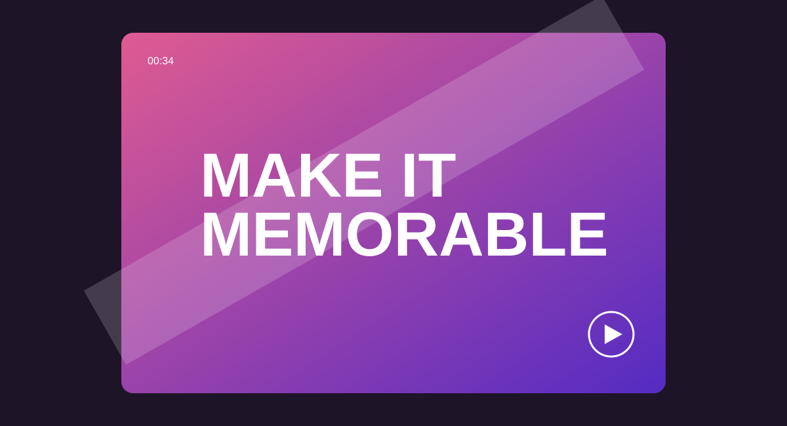

Video production - Illustrative case study
Campaigns
in motion
A video editing portfolio concept for brands that need short-form content to feel intentional, polished and unmistakably theirs.

Every second should have a reason to be there.
This collection frames video editing as more than trimming clips. It brings pace, narrative, captions, sound, colour and motion into one experience that earns attention in a busy feed-and leaves the viewer with a clear next step.
02 Challenge
Make a scroll-stopping edit without making the brand feel generic.
- Find the strongest story in raw footage and limited attention spans
- Design for sound-off viewing while rewarding viewers who listen
- Keep a campaign consistent across multiple aspect ratios and cutdowns
Each piece begins with the audience and platform in mind. A strong first frame creates the hook, captions make the message accessible, and deliberate pacing carries the viewer to the call to action. Colour grading, sound design and restrained motion graphics give the final delivery a finish that belongs to the brand.
04 What the system delivers
This is an illustrative portfolio concept. Replace it with real video embeds, performance data and client permissions as work becomes available.